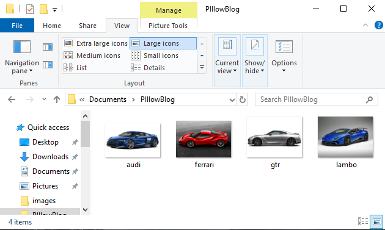

Python's (PIL)low Package
Welcome back for another exciting blog post!
Today's topic that we will be covered is the Python package: Pil/Pillow.
Before we get started a quick note:
PIL/Pillow are basically the same exact package with Pillow being the module that took over. They operate using the same exact add on's and functions.
PIL and Pillow cannot co-exist in the same environment
(To keep things simple I would suggest you double check which package you may have installed already using pip freeze.)
If PIL is what you have it will probably be worthwhile to uninstall it and pip install Pillow in it's place to make sure we dont encounter any issues moving forward.
You can go ahead and pip install Pillow in what ever you may be using to follow along (jupyter notebook, terminal or text editor)
What is Pillow?
Pillow is a Python Imaging Library used for opening, manipulating and storing images. This package works with a variety of files (.png, .jpg, .jpeg, .gif, etc.) which makes it very handy when working on various different projects.
To help you get started in using this package we are going to cover some of the basic things that can be done using Pillow in this post with a follow up post with more advance topics coming at a later date.
Now if everything is installed and ready to go
Let's learn:

To get started I am going to create a new folder and download a couple images off the internet to work with. Once your ready you should have a folder that looks like this:

(here you can see that I have created a folder named PillowBlog and I have downloaded 4 images of cars)
We are ready to get started now! I will be working in Jupyter Notebook but you can use what ever tool you like to follow along as mentioned above.
First we will import the package
from PIL import Image
(once again, PIL has basically become Pillow and uses the same functions and commands to operate. This is why PIL is the name you use to import the library)
.OPEN() and .SHOW() AN IMAGE
path = ('C:\\Users\\v_sha\\Documents\\PIllowBlog\\')
(Because I have not saved my Jupyter Notebook file in the same folder as where the pictures I am working with are I need to use the file path to access them. To save time from having to write out the file path each time, I am storing them in an object called Path so it will be easier to access. To make things easier for yourself I would suggest creating and saving your .py file within the same folder as your pictures)
To begin we need to create an object in which we will store our image. To keep things simple we will work with just 1 image to start off.
Here I am creating an object called image1 which I will use to store an image (lambo.jpg)
Then using Image.open() we will access our image
# 1)
image1 = Image.open('C:\\Users\\v_sha\\Documents\\PIllowBlog\\lambo.jpg')
# 2)
image1 = Image.open(path + 'lambo.jpg')
(the above shows both methods of me accessing my pictures.
1) shows how I would access the pictures using the file path
2) shows me using the path object in which I stored the filepath for convenience)
image1.show()
Using the .show() function on your stored image object will open up the image. If you go ahead and run this function you will notice that the image you chose to work with should open up to view.
Checking Image Data
Like everything, images also have stored data within them that can be helfpul to view when attempting to work with them.
print(image1.format, image1.size, image1.mode)
JPEG (259, 194) RGB
Using these attributes we are able to see data for the image stored within the image1 object (lambo.jpg)
.format = tells us the type of file the image is (JPEG)
.size = tells us the dimensions of the image in pixels (259, 194)
.mode = tells us that it is a colour image (RGB)
Change and Save New Image Format
image1.save(path + 'lambo.png')
.save() allows us to take an existing image file and save it under a new file extension while keeping the original. If you remember, my original 'lambo' image was a .jpg and I am now creating a new copy of it as a .png file.
Let's now try working with multiple image files
import os
for f in os.listdir(path):
if f.endswith(".jpg"):
print(f)
audi.jpg
ferrari.jpg
gtr.jpg
lambo.jpg
Here we have imported os and using this we have a created a for loop which will loop through our folder (stated in os.listdir()...remember I stored my file path in an object called path for convenience) and the loop will bring up all files that endswith('.jpg')
You can see the printed output of my 4 original car images which were all saved as .jpg files
Change and Save Multiple Image Files at once
I am going to take my 4 .jpg image files and create duplicate files but as .png's
I am going to create a png sub folder in my main image folder that I have been working in to save these new files.
Now let's create the 4 .png files and save them into the png folder
path1 = ('C:\\Users\\v_sha\\Documents\\PIllowBlog\\png')
for f in os.listdir(path):
if f.endswith(".jpg"):
i = Image.open(path + f)
fn, fext = os.path.splitext(f)
i.save(path1 +'/{}.png'.format(fn))
Here we are creating a for loop that goes into the folder and grabs the 4 original .jpg images that we have and creates objects out of them.
We then specify fn = FileName, and fext = FileExt and split them from each other
And then finally using .save() we are saving the image objects that we have now converted into .png files and storing them into our png folder
If you go look in your png folder you should see 4 images in there now formatted as .png
RESIZING IMAGES
Create a new sub folder that will store the resized images
I will name mines: size_300
path2 = ('C:\\Users\\v_sha\\Documents\\PIllowBlog\\size_300')
size_300 = (300, 300)
for f in os.listdir(path):
if f.endswith(".jpg"):
i = Image.open(path + f)
fn, fext = os.path.splitext(f)
i.thumbnail(size_300)
i.save(path2 +'/{}.png'.format(fn))
First we create an object which stores in the new size dimensions that we want:
*size_300 = (300, 300)
Then using the same for loop as before we add in one additional line:
i.thumbnails(size_300)
which tells the block of code that we want to resize the images before saving them into our folder.
If you go check your newly created size_300 you will now see the new images saved in there.
We can also insert in multiple arguments for resizing images if we needed to and execute it all at once.
create another folder. I will name mines size_700 to correspond with the new dimensions
path3 = ('C:\\Users\\v_sha\\Documents\\PIllowBlog\\size_700')
size_300 = (300, 300)
size_700 = (700, 700)
for f in os.listdir(path):
if f.endswith(".jpg"):
i = Image.open(path + f)
fn, fext = os.path.splitext(f)
i.thumbnail(size_700)
i.save(path3 +'/{}.png'.format(fn))
i.thumbnail(size_300)
i.save(path2 +'/{}.png'.format(fn))
Using the same exact block of code, we added in an additional i.thumbnail() line of code where we set in the arguement for our new dimensions of (700, 700)
So the for loop will now loop through our images and create new resized images of (700, 700) and then do the same for (300, 300)
If you look inside your folders you will see them now populated accordingly with the resized images.
ALTERING IMAGES
1) Rotate an Image:
(let's double check and see our intial image object that we stored at the very beginning)
image1
image1.rotate(180)
Using the .rotate() attribute we have rotated our image object 180 degrees so that it is now upside down. If you wanted to save the image like this you can store it back into the original object (image1) or store it into a new object
2) Change Image Colour
image1

image1.convert(mode='L')
As you can see .convert(mode='L') is used to convert a coloured image into black and white.
3) Blur an Image
from PIL import ImageFilter
image1

image1.filter(ImageFilter.GaussianBlur())
Here you can see that we have imported a Pillow package named ImageFilter
now using this package we have applied a GaussianBlur to our image using the default values and our image is now noticeably blurred.
There are many things you can do using this library.
I wanted to focus on some of the basics to help you get started and hopefully this blog was easy to follow along.
Check back soon for a follow up post on more Pillow magic!